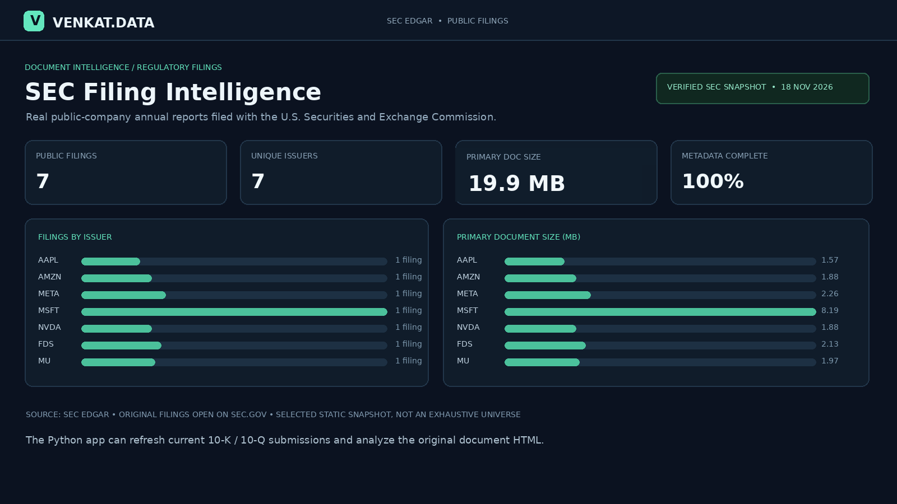

INTERACTIVE DASHBOARD PREVIEW
FEATURED PROJECT · DATA ANALYTICS
SEC Filing Intelligence &
Document Analytics
A source-linked workflow built on seven real SEC EDGAR annual reports. The static dashboard explores filing metadata; the Python app retrieves original report HTML and analyzes sections and text signals.
7real SEC filings
7public issuers
10-Kannual report form